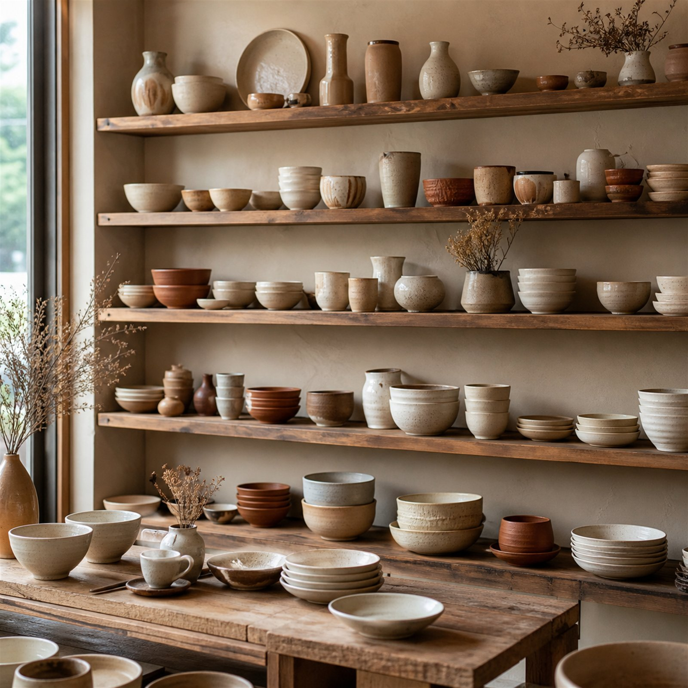
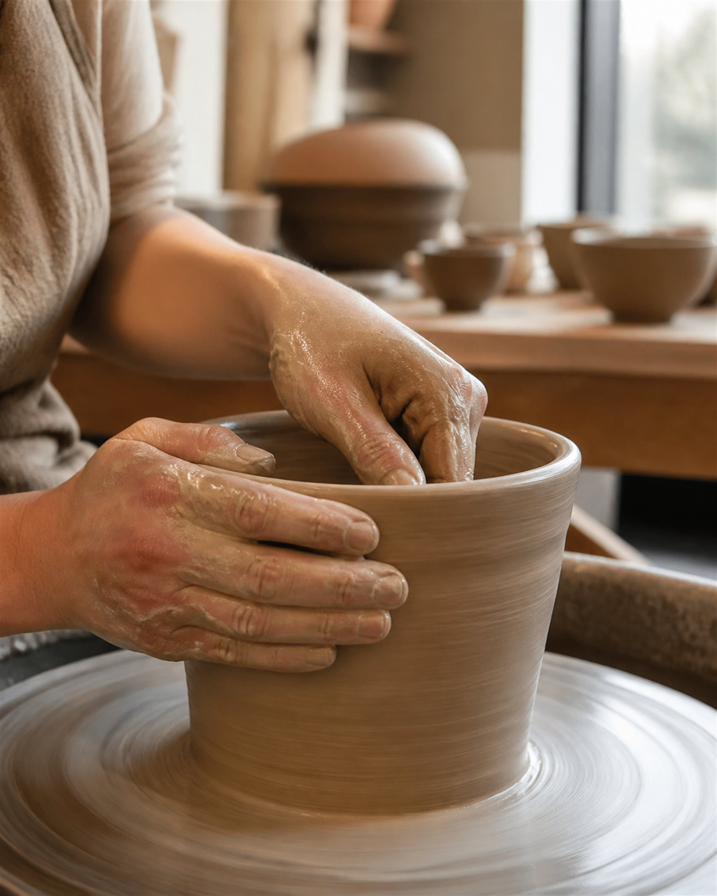
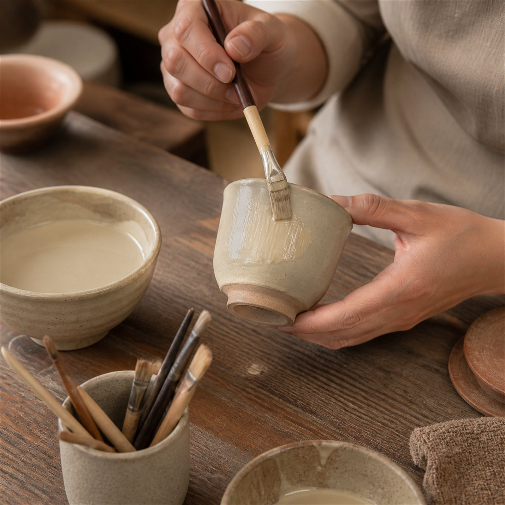

POTTERY STUDIO · 성수동
물레 앞에 앉으면 두 시간이 금방 갑니다. 느려야만 만들어지는 것들을, 흙과물레에서 경험해 보세요.


CLASS
처음이어도 괜찮습니다. 컵 하나를 처음부터 끝까지.
55,000원 / 1인
기초 성형부터 유약 시유까지, 나만의 기물 세 점.
180,000원 / 월
PROCESS
물레 위에서 형태 만들기
일주일 천천히 말립니다
800℃ 그리고 유약 입히기
1250℃ — 비로소 그릇
STUDIO

수 – 일 11:00 – 20:00 · 예약제 · 앞치마와 차는 준비되어 있습니다